El estudiante conocerá los principales elementos necesarios para la conclusión de un proyecto, buscando los
beneficios de un proceso sólido y haciendo a un lado una gestión caótica, objetivos poco claros, resultados de
baja calidad y evitando que el proyecto supere al presupuesto asignado.
Asimismo, conocerá la etapa final del proyecto que corresponde a la finalización y/o a la etapa final de
ciclo de vida del proyecto; en esta unidad se revisará que toda la información esté completa y que se hayan
cumplido los objetivos marcados en la etapa inicial del proyecto.
Lo que se busca en esta unidad es que el estudiante obtenga los conocimientos necesarios que se requieren
para asegurarse que todo el trabajo del proyecto esté completo.
“La gestión del proyecto es cómo hacer
malabarismos con tres bolas: tiempo, costo y calidad. La gestión del programa es como un grupo de artistas
de circo parados en un círculo, cada uno haciendo malabares con tres bolas e intercambiándolas de vez en
cuando.”
G. Reiss
Objetivo de
unidad
El estudiante preparará el cierre del proyecto y analizará la gestión y prevención de riesgos durante el
proyecto, con la finalidad de obtener la conclusión adecuada del proyecto, cumpliendo el alcance definido y
con los objetivos del proyecto.
Organizador gráfico de unidad
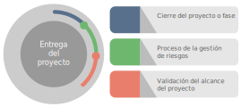
¡Bienvenidos a esta unidad!
4.1 Cierre del proyecto o fase
En esta fase se busca obtener el máximo provecho de la experiencia y que este se realice a plena satisfacción
del cliente, es momento de realizar un balance del mismo, midiendo el alcance de los objetivos previstos.
Dentro de la gestión de proyectos se encuentra la fase de cierre de proyecto o fase, por lo cual (PMBOK,
2017) muestra el siguiente diagrama:
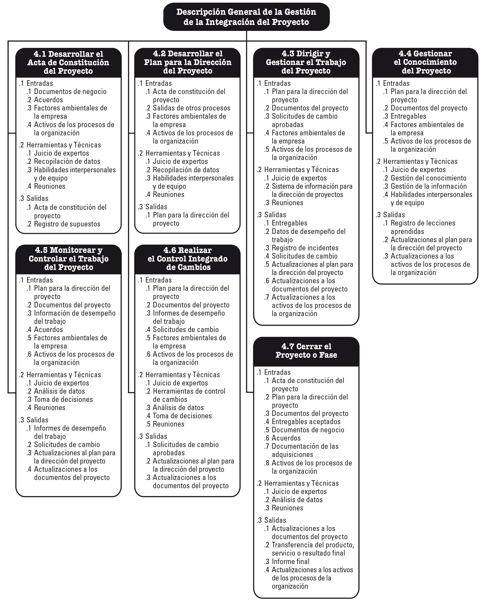
Figura 1. (PMBOK, 2017, pág. 71), Descripción General de la Gestión de la Integración del Proyecto
×
Y sobre la fase de cierre de proyecto o fase menciona lo siguiente:
Cerrar el proyecto o fase es el proceso de finalizar todas las actividades para el proyecto, fase o contrato.
Los beneficios clave de este proceso son que la información del proyecto o fase se archiva, el trabajo
planificado se completa y los recursos del equipo de la organización se liberan para emprender nuevos
esfuerzos. Este proceso se lleva a cabo una única vez o en puntos predefinidos del proyecto.
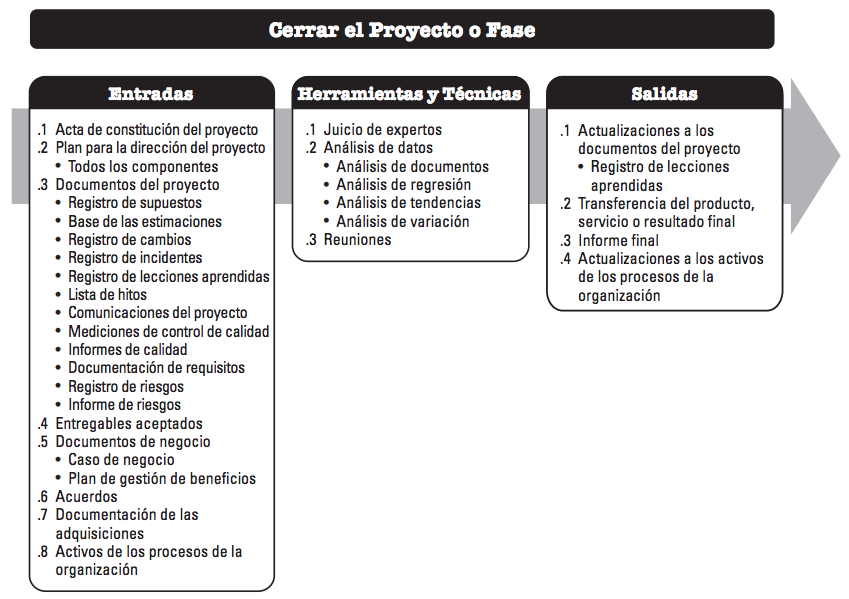
Figura 2. (PMBOK, 2017, pág. 121), Entradas, Herramientas y Técnicas, y Salidas.
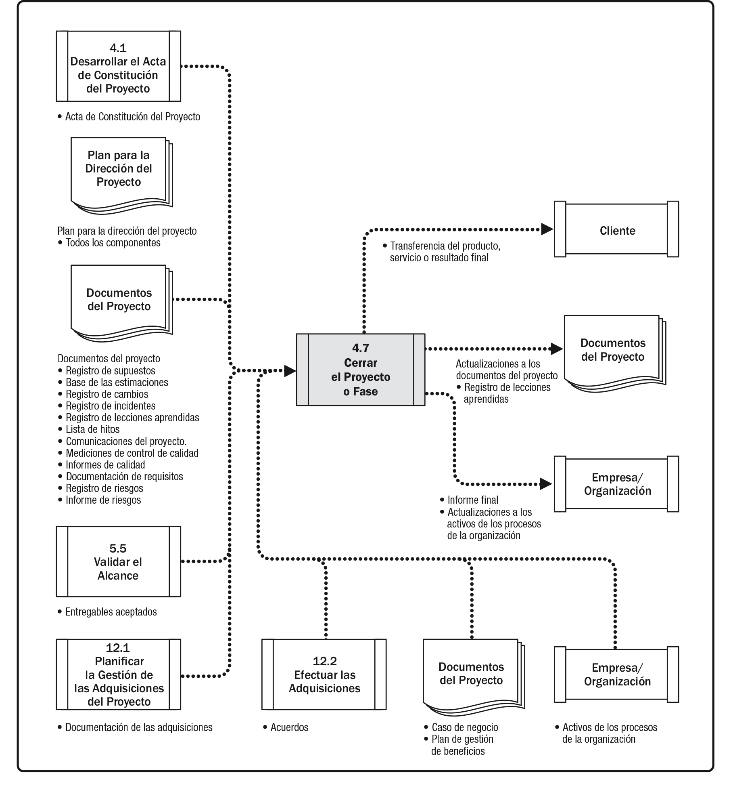
Figura 3. (PMBOK, 2017, pág. 121), Diagrama de Flujo de Datos.
Durante el cierre del proyecto, el director del proyecto revisará el plan para la dirección del proyecto para
asegurarse de que todo el trabajo del proyecto está completo y de que el proyecto ha alcanzado sus objetivos.
Las actividades necesarias para el cierre administrativo del proyecto o fase incluyen, entre otras:
Las acciones y actividades necesarias para satisfacer los criterios de culminación o salida de la fase o
del proyecto, tales como:
Asegurarse de que todos los documentos y entregables estén actualizados y de que todos los incidentes
estén resueltos;
Confirmar la entrega y la aceptación formal de los entregables por parte del cliente;
Asegurar que todos los costos sean asignados al proyecto;
Cerrar las cuentas del proyecto;
Reasignar al personal;
Ocuparse del exceso de materiales del proyecto;
Reasignar las instalaciones, equipamiento y otros recursos del proyecto; y
Elaborar los informes finales del proyecto según lo requieran las políticas de la organización.
Actividades relacionadas con la completitud de los acuerdos contractuales aplicables al proyecto o fase
del proyecto, tales como:
Confirmar la aceptación formal del trabajo del vendedor,
Finalizar las reclamaciones abiertas,
Actualizar los registros para reflejar resultados finales, y
Archivar dicha información para su uso en el futuro.
Actividades necesarias para:
Recopilar los registros del proyecto o fase,
Auditar el éxito o fracaso del proyecto,
Gestionar el intercambio y la transferencia de conocimiento,
Identificar las lecciones aprendidas, y
Archivar la información del proyecto para su uso futuro por parte de la organización.
Las acciones y actividades necesarias para transferir los productos, servicios o resultados del proyecto a
la siguiente fase o a producción y/u operaciones.
Recolectar las sugerencias para mejorar o actualizar las políticas y procedimientos de la organización, y
enviarlas a la unidad adecuada de la organización.
Medir la satisfacción de los interesados.
El proceso cerrar el proyecto o fase también establece los procedimientos para analizar y documentar las
razones de las acciones emprendidas en caso de que un proyecto se dé por terminado antes de su culminación.
Para conseguir hacer esto con éxito, el director del proyecto necesitará involucrar en el proceso a los
interesados adecuados. (PMBOK, 2017, pág. 123)
Se invita al alumno a revisar detalladamente los conceptos del proceso: “Cerrar el proyecto o fase”,
en el libro “A Guide to the Project Management Body of Knowledge” Pmbok Guide 6ª. Edición Pág. 121 -
128
De la misma manera (Gray & Larson, 2009), mencionan lo siguiente con respecto al cierre de proyectos:
Eventualmente, cada proyecto llega a su fin. En algunos proyectos el final puede no ser tan claro como se
podría esperar. Aunque la declaración del alcance puede definir una terminación clara de un proyecto, la
conclusión real puede o no corresponder. Por fortuna, la mayoría de los proyectos tienen la bendición de un
final bien definido. Las auditorías regulares del proyecto y un equipo de prioridades identificarán los
proyectos que deben tener finales distintos a los planeados.
Condiciones para el cierre del proyecto
Da clic en cada uno de los títulos
para obtener más información.
La circunstancia más común para el cierre del proyecto es tan sólo un proyecto terminado. En el
caso de proyectos “llave en mano”, tal como la construcción de una nueva instalación de
manufactura o la creación de un sistema de información personalizada, la terminación está marcada
por la transferencia de la propiedad al cliente. Para muchos proyectos de desarrollo, el final
incluye la terminación del diseño definitivo a producción y la creación de un nuevo producto o
línea de servicio. Para otros proyectos internos, tales como ascensos en el sistema o la creación
de nuevos sistemas de control de inventario, el final ocurre cuando la producción se incorpora en
las operaciones continuas. Algunas modificaciones en el alcance, el costo y el programa quizás
ocurrieron durante la ejecución.
Prematuras
Algunos proyectos se pueden completar antes con la eliminación de algunas de sus partes. Por
ejemplo, en un nuevo desarrollo del producto, un gerente de marketing puede insistir en modelos de
producción antes de probar:
Deme el nuevo producto ahora, como esté. La entrada temprana al mercado
significará grandes utilidades. Sé que podemos vender millones de éstos. Si no lo hacemos ahora,
perderemos la oportunidad.
La presión está en terminar el proyecto y enviarlo a producción. Antes de sucumbir a esta forma de presión,
la administración superior y todos los interesados deben revisar y evaluar con cuidado las implicaciones y
riesgos asociados con esta decisión. Con demasiada frecuencia, los beneficios son ilusorios, peligrosos y con
riesgos. ¿Por qué han cambiado el alcance del proyecto y los objetivos? Un cierre anticipado del proyecto debe
tener el respaldo de todos los interesados. La decisión se debe dejar al grupo de auditoría, equipo
prioritario de proyecto o administración superior.
Da clic en cada uno de los títulos
para obtener más información.
Al parecer, algunos proyectos nunca terminan; es decir, parece que desarrollan vida propia.
Aunque estos proyectos están plagados de retrasos, se consideran deseables cuando por fin
terminan. Las características más importantes de este tipo de proyectos son los “agregados
constantes”. En forma continua, el dueño u otros requieren más cambios pequeños que mejorarán el
resultado del proyecto, producto o servicio. Estos cambios por lo general representan los “extras”
percibidos como parte de la intención original del proyecto. Los ejemplos suman características al
software, al diseño de producto, a los sistemas o a los proyectos de construcción. Las constantes
adiciones sugieren un alcance de proyecto muy mal concebido. Un mayor cuidado en la definición
inicial del alcance del proyecto y de las limitaciones reducirá el fenómeno de las adiciones.
En algún punto, el administrador del proyecto o el grupo de auditoría necesitan hacer el llamado
para el cierre del proyecto. Aunque estos proyectos muestran el alcance, el costo y los cambios
inesperados al programa, enfrentar el hecho de que el proyecto debe llegar a su fi n no es una
tarea fácil. Un estudio interesante de Isabelle Royer relata los proyectos “perpetuos” de dos
compañías francesas que duraron más de una década. Essilor, el fabricante de los lentes
“progresivos” que corrigen la miopía, y Lafarge, fabricante de materiales de construcción. Cada
una tenía proyectos que empezaron con mucha fanfarria sólo para fracasar al hacer un progreso
significativo. Ignoraron las señales de los problemas y permitieron que sus proyectos condenados
al fracaso continuaran por más de 10 años antes de matarlos. Estas empresas absorbieron millones
de dólares en inversiones perdidas.
Proyecto fracasado
En circunstancias raras, los proyectos tan sólo fallaron por una diversidad de razones. Por
ejemplo, el desarrollo del prototipo de un producto de nueva tecnología puede mostrar el concepto
original como imposible de trabajar. O en el desarrollo de un medicamento nuevo, el proyecto
tendría que ser abandonado porque sus efectos secundarios son inaceptables.
Cambio en la prioridad
El equipo de prioridad revisa de manera permanente las prioridades de selección del proyecto para
reflejar los cambios en la dirección organizacional. Por lo general, estos cambios son pequeños
durante un periodo, pero en forma periódica los cambios importantes en la organización requieren
variaciones dramáticas en las prioridades. En este periodo de transición, los proyectos en proceso
necesitarían alterarse o cancelarse. Así, un proyecto puede empezar con una alta prioridad, pero
luego ver que baja su nivel o hay una crisis durante su ciclo de vida conforme las condiciones
cambian. Por ejemplo, una empresa de juegos de computadora encontró que su competidor más
importante colocó en el mercado un juego de 64 bits en tercera dimensión mientras que sus
proyectos de desarrollo de productos aún estaban centrados en juegos de 32 bits. Desde ese
momento, los proyectos de juegos de 32 bits se consideraron obsoletos y encontraron la muerte
súbita. El equipo de prioridad de esta empresa revisó las prioridades de la organización. Los
grupos de auditoría encontraron fácil recomendar el cierre para muchos proyectos, pero los que
estaban en el margen o en “áreas grises” aún presentaban un análisis formidable y decisiones
difíciles.
En algunos casos la importancia original del proyecto se juzgó en forma equivocada; en algunos
cambian las necesidades. En otras situaciones, la ejecución del proyecto es poco práctica o
imposible. Dado que el grupo de auditoría y el equipo de prioridad revisan un proyecto en forma
periódica, la percepción modificada de la función del proyecto (prioridad) en el esquema total de
las cosas se vuelve aparente con mucha rapidez. Si el proyecto ya no contribuye en forma
significativa a la estrategia de la organización, el grupo de auditoría o de prioridad necesita
recomendar que se termine el proyecto. En muchas situaciones de terminación, estos proyectos se
integran en proyectos relacionados u operaciones rutinarias diarias.
La terminación de los proyectos de “prioridad modificada” no es una tarea fácil. La percepción
del equipo del proyecto puede ser que la prioridad aún es alta en relación con otros proyectos.
Los egos y, quizás en algunos casos, los trabajos están en juego. Los individuos o los equipos
piensan que el éxito está apenas arriba del horizonte.
Darse por vencido es equivalente al fracaso. Por lo general, se dan recompensas por permanecer con un
proyecto en tiempos difíciles, pero no por darse por vencidos. Esos temas emocionales hacen difícil la
terminación del proyecto. (Gray & Larson, 2009, págs. 437 - 440)
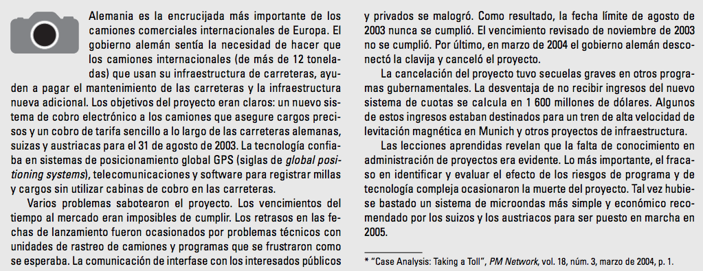
Figura 4. (Gray & Larson, 2009, pág. 440), Caso de práctica “Proyecto Cancelado”.
4.1.1 Señales para continuar o cierre temprano de un proyecto
Las personas que por primera vez se preparan para unirse a un grupo de auditoría de proyecto encontrarían muy
gratificante leer algunos estudios que identifican las barreras para el éxito del proyecto y la antítesis,
factores que contribuyen para el éxito. El conocimiento de estos factores sugerirá las áreas de revisión en
una auditoría. Estos factores señalan dónde podrían existir los problemas o los patrones de éxito. En raras
ocasiones, su existencia puede señalar problemas y la necesidad de que un proyecto interno se termine con
anticipación.
Varios estudios han examinado esta área. Hay una conformidad sorprendente entre ellos. Por ejemplo, todos
estos análisis (y otros) clasifican la mala definición del proyecto (alcance) como una barrera importante para
el éxito del proyecto. No hay evidencia de que estos factores hayan cambiado al paso de los años, aunque
algunas diferencias de importancia relativa se han señalado en distintas industrias.
En la figura 5 se presentan las barreras identificadas por 1 654 administradores de proyecto que participaron
en una encuesta por Gobeli y Larson. Las señales de la figura 5, pueden ser útiles para los grupos de
auditoría en su revisión preliminar de los proyectos en proceso o incluso en las auditorías posteriores al
proyecto.
Cuando el grupo de auditoría o el equipo de prioridad sugieren el cierre, el anuncio puede necesitar venir de
una posición de presidente y director ejecutivo, si el efecto es grande o si participan los egos clave. Pero,
en la mayoría de los casos, la decisión de cierre se deja al grupo de auditoría o al equipo de prioridad.
Antes del anuncio de un cierre se debe establecer un plan para la asignación futura de los miembros del equipo
de proyecto.
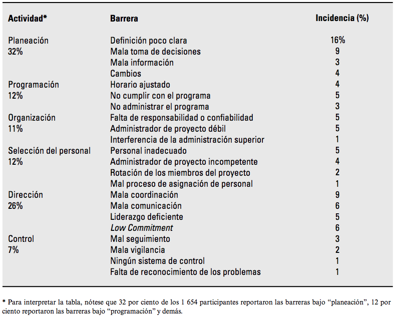
Figura 5. (Gray & Larson, 2009, pág. 441), Barreras para el éxito del proyecto.
4.1.2 Proceso para el cierre del proyecto
Conforme el proyecto se acerca al fi n de su ciclo de vida, las personas y el equipo se dirigen a otras
actividades o proyectos. El manejo cuidadoso de la fase de cierre es tan importante como otra fase del
proyecto. Los desafíos importantes para el administrador del proyecto y los miembros del equipo ya terminaron.
Hacer que el administrador del proyecto y los miembros del equipo concluyan las puntas y cabos del cierre del
proyecto es en ocasiones difícil. Por ejemplo, tomar en cuenta al equipo y terminar los informes finales se
considera aburrido por los profesionales del proyecto que se orientan a la acción. Buscan nuevas oportunidades
y desafíos. Las actividades más importantes encontradas en las terminaciones del proyecto son el desarrollo de
un plan, asignación de personal, comunicación del plan y su realización.
El plan de cierre típico incluye respuestas a preguntas como éstas:
¿Qué tareas se requieren para cerrar el proyecto?
¿Quién será el responsable de estas tareas?
¿Cuándo empezará y cuándo terminará el cierre?
¿Cómo se entregará el proyecto?
Por lo general, la asignación de personal no es un tema significativo si la terminación no es un trabajo
súbito de corte. Si el proyecto se cancela antes en forma súbita, antes de la terminación, puede ser juicioso
buscar a alguien distinto del administrador del proyecto para hacer el cierre. En los proyectos exitosos y
terminados, el administrador del proyecto es la opción probable para cerrar el proyecto. En este caso, es
mejor dar a conocer la siguiente asignación del administrador del proyecto; esto servirá como incentivo para
terminar el proyecto tan pronto como sea posible y moverse hacia nuevos desafíos.
Comunicar el plan de terminación y el programa con anticipación permite al equipo del proyecto:
Aceptar el hecho psicológico de que el proyecto terminará y
Prepararse para seguir adelante.
El escenario ideal es tener lista la siguiente asignación de los miembros del equipo cuando se anuncie la
terminación. Por el contrario, un dilema importante en la fase de terminación es si los participantes esperan
los proyectos futuros u otras oportunidades. El desafío del administrador del proyecto es mantener al equipo
enfocado en las actividades del proyecto y la entrega al cliente hasta que este, esté completo. Los
administradores de proyecto deben tener el cuidado de mantener su entusiasmo para terminar el proyecto y hacer
que la gente sea responsable de los vencimientos, que son proclives a tener retrasos durante las etapas
decrecientes del proyecto.
Llevar a cabo el plan de cierre incluye varias actividades de conclusión. Muchas organizaciones desarrollan
listas largas de los proyectos de cierre conforme obtienen experiencia. Estas son muy útiles y aseguran que
nada pase inadvertido. La realización del cierre incluye cinco actividades importantes:
Obtener la aceptación de entrega del cliente.
Cerrar los recursos y liberarlos para nuevos usos.
Reasignar a los miembros del equipo de proyecto.
Cerrar las cuentas y ver que todas las notas se paguen.
Evaluar al equipo del proyecto, a los miembros de éste y al administrador del proyecto. (Gray &
Larson, 2009, págs. 441 - 442)
CertCampus (2018). 4.7 Cerrar el Proyecto a o Fase PMBOK 6. [Archivo de video]
Disponoble en: https://youtu.be/REJMWYSqtN4
Yareth Perez (2020). Gestión de proyectos- Cierre del proyecto-Ejemplo. [Archivo de
video] Disponoble en: https://youtu.be/fel0RbEJzT4
4.2 Validación del alcance del proyecto
El conocer todos los procesos involucrados que ayudan a concluir con éxito el proyecto, y que garantizan que
el proyecto incluya de manera puntual todos los productos comprometidos en la planeación inicial, habla de
que, se ha llegado al alcance del proyecto de manera exitosa, por lo que algunos estudiosos definen de la
siguiente manera, al alcance del proyecto.
Según (PMBOK, 2017), menciona algunos aspectos muy importantes en la gestión del alcance del proyecto, que
dice:
La gestión del alcance del proyecto incluye los procesos requeridos para garantizar que el
proyecto incluya todo el trabajo requerido, y únicamente el trabajo requerido, para completar el proyecto con
éxito. Gestionar el alcance del proyecto se enfoca primordialmente en definir y controlar que se incluye y que
no se incluye en el proyecto.
Los procesos de gestión del alcance del proyecto son:
Planificar la gestión del alcance —Es el proceso de crear un plan de gestión del alcance
que documente como se va a definir, validar y controlar el alcance del proyecto y del producto.
Recopilar requisitos —Es el proceso de determinar, documentar y gestionar las necesidades
y los requisitos de los interesados para cumplir con los objetivos del proyecto.
Definir el alcance —Es el proceso de desarrollar una descripción detallada del proyecto y
del producto.
Crear la EDT/WBS —Es el proceso de subdividir los entregables y el trabajo del proyecto
en componentes más pequeños y más fáciles de manejar.
Validar el alcance —Es el proceso de formalizar la aceptación de los entregables del
proyecto que se hayan completado.
Controlar el alcance —Es el proceso de monitorear el estado del proyecto y del alcance
del producto, y de gestionar cambios a la línea base del alcance.
La figura 6 proporciona una descripción general de los procesos de gestión del alcance del proyecto. Los
procesos de gestión del alcance del proyecto se presentan como procesos diferenciados con interfaces
definidas, aunque en la práctica se superponen e interactúan entre ellos de formas que no pueden detallarse en
su totalidad.
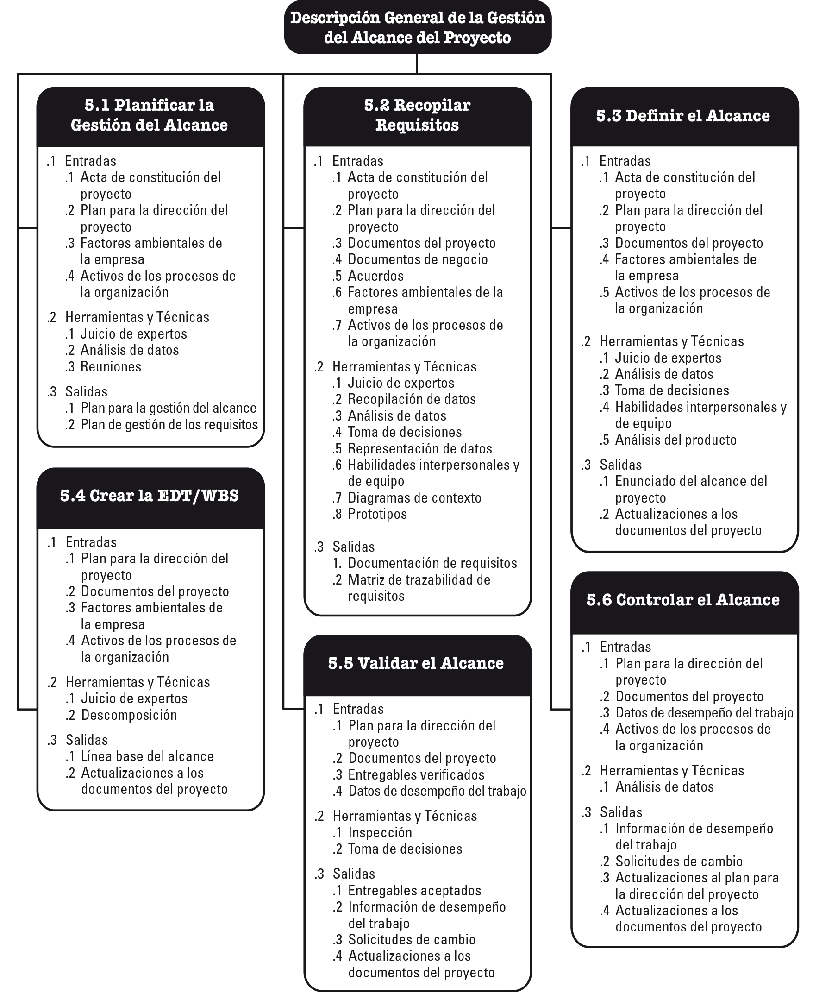
Figura 6. (PMBOK, 2017, pág. 130), Descripción general de la gestión del alcance del proyecto.
×
En el contexto del proyecto, el término “alcance” puede referirse a:
Alcance del producto. Características y funciones de un producto, servicio o resultado.
Alcance del proyecto. Trabajo realizado para entregar un producto, servicio o resultado
con las funciones y características especificadas. En ocasiones se considera que el término “alcance del
proyecto” incluye el alcance del producto.
Los enfoques de los ciclos de vida de los proyectos pueden variar continuamente desde enfoques predictivos
hasta enfoques adaptativos o ágiles. En un ciclo de vida predictivo, los entregables del proyecto se definen
al comienzo del proyecto y cualquier cambio en el alcance es gestionado en forma progresiva. En un ciclo de
vida adaptativo o ágil, los entregables son desarrollados a través de múltiples iteraciones, donde se define y
se aprueba un alcance detallado antes del comienzo de una iteración.
Los proyectos con ciclos de vida adaptativos están destinados a responder a niveles altos de cambio y
requieren el involucramiento continuo de los interesados. El alcance global de un proyecto adaptativo será
descompuesto en un conjunto de requisitos y trabajos a realizar, a veces denominado registro de trabajos
pendientes asociado al producto. Al comienzo de una iteración, el equipo trabajará para determinar cuántos de
los elementos de alta prioridad de la lista del registro de trabajos pendientes se pueden entregar dentro de
la siguiente iteración. Se repiten tres procesos (recopilar requisitos, definir el alcance, crear la EDT/WBS)
para cada iteración. Por el contrario, en un proyecto predictivo estos procesos se llevan a cabo hacia el
principio del proyecto y se actualizan según sea necesario, utilizando el proceso integrado de control de
cambios.
En un ciclo de vida adaptativo o ágil, el patrocinador y los representantes del cliente deberían estar
continuamente involucrados en el proyecto para proporcionar retroalimentación sobre los entregables a medida
que son generados y para garantizar que el registro de trabajos pendientes asociado al producto refleje sus
necesidades actuales. Para cada iteración se repiten dos procesos (validar el alcance y controlar el alcance).
Por el contrario, en un proyecto predictivo, Validar el Alcance ocurre con cada entregable o revisión de fase
y Controlar el Alcance es un proceso continuo.
En proyectos predictivos, la línea base del alcance del proyecto es la versión aprobada del enunciado del
alcance del proyecto, la estructura de desglose del trabajo (EDT/WBS) y su diccionario de la EDT/WBS asociado.
Una línea base puede cambiarse solo mediante procedimientos formales de control de cambios y se utiliza como
base de comparación durante la realización de los procesos de Validar el Alcance y de Controlar el Alcance,
así como de otros procesos de control. Los proyectos con ciclos de vida adaptativos utilizan registros de
trabajos pendientes (incluidos los requisitos del producto y las historias de usuarios) para reflejar sus
necesidades actuales.
La conclusión del alcance del proyecto se mide con relación al plan para la dirección del proyecto, mientras
que la conclusión del alcance del producto se mide con relación a los requisitos del producto. El término
“requisito” está definido como una condición o capacidad que debe estar presente en un producto, servicio o
resultado a fin de satisfacer un acuerdo u otra especificación impuesta formalmente.
Validar el alcance es el proceso de formalizar la aceptación de los entregables del proyecto que se hayan
completado. Los entregables verificados obtenidos del proceso de controlar la calidad, constituyen una entrada
para el proceso de validar el alcance. Una de las salidas de Validar el Alcance son los entregables aceptados
que son formalmente firmados y aprobados por el interesado autorizado. Por lo tanto, el interesado debe
involucrarse desde el principio durante la planificación (a veces también al inicio) y proporcionar entradas
sobre la calidad de los entregables para que Controlar la Calidad pueda evaluar el desempeño y recomendar los
cambios necesarios. (PMBOK, 2017, págs. 129 - 130)
Y con respecto a la validación del alcance del proyecto (PMBOK, 2017), menciona lo siguiente:
Validar el Alcance es el proceso de formalizar la aceptación de los entregables del proyecto
que se hayan completado. El beneficio clave de este proceso es que aporta objetividad al proceso de aceptación
y aumenta la probabilidad de que el producto, servicio o resultado final sea aceptado mediante la validación
de cada entregable. Este proceso se lleva a cabo periódicamente a lo largo del proyecto, según sea necesario.
La figura 7 muestra las entradas, herramientas y técnicas, y salidas de este proceso. La figura 8 ilustra el
diagrama de flujo de datos del proceso.
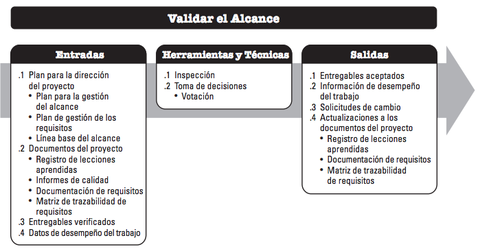
Figura 7. (PMBOK, 2017, pág. 163), Validar el alcance: Entradas, Herramientas y técnicas, y
salidas.
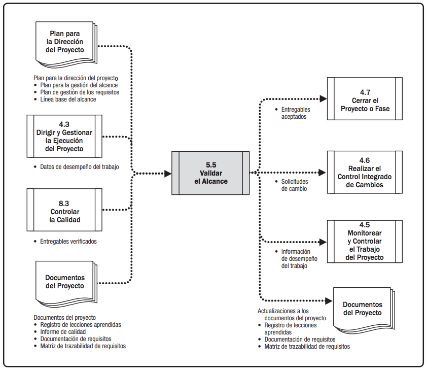
Figura 8. (PMBOK, 2017, pág. 164), Validar el alcance: Diagrama de flujo de datos.
Los entregables verificados obtenidos del proceso Controlar la Calidad se revisan con el cliente o con el
patrocinador para asegurarse que se han completado satisfactoriamente y que han recibido su aceptación formal
por parte del cliente o el patrocinador. En este proceso, las salidas obtenidas como resultado de los procesos
de Planificación en el Área de Conocimiento de Gestión del Alcance del Proyecto, tales como la documentación
de requisitos o la línea base del alcance, así como los datos de desempeño del trabajo obtenidos de los
procesos de Ejecución en otras Áreas de Conocimiento, constituyen la base para realizar la validación y la
aceptación final.
El proceso Validar el Alcance difiere del proceso Controlar la Calidad en que el primero se ocupa
principalmente de la aceptación de los entregables, mientras que el segundo se ocupa fundamentalmente de
corroborar la corrección de los entregables y su cumplimiento con los requisitos de calidad especificados para
los mismos. Por lo general, el proceso Controlar la Calidad se lleva a cabo antes del proceso Validar el
Alcance, aunque ambos procesos pueden efectuarse en paralelo. (PMBOK, 2017, págs. 163 - 164)
Se invita al estudiante a revisar detalladamente los conceptos del proceso: “Validar el alcance del
proyecto”, en el libro “A Guide to the Project Management Body of Knowledge” Pmbok Guide 6ª.
Edición Págs. 129 - 172
Asimismo (Gray & Larson, 2009), mencionan algunos aspectos de suma importancia sobre el tema alcance del
proyecto para su integración dentro del proceso de administración de los proyectos reales:
Existen dos dimensiones en el proceso de administración de proyectos (véase la figura 9). La
primera es el aspecto técnico del proceso administrativo, el cual comprende la parte formal, disciplinada y de
lógica pura del proyecto. Este aspecto técnico descansa en el sistema formal de información disponible. Esta
dimensión incluye la planeación, programación y control de los proyectos. Se redactan declaraciones claras
sobre el alcance del proyecto para vincularlo con el cliente y facilitar la planeación y el control. La
creación de productos entregables y las estructuras de descomposición del trabajo facilitan la planeación y el
monitoreo del avance del proyecto. La estructura de descomposición del trabajo sirve como una base de datos
que relaciona todos los niveles en la organización, los principales productos y todo el trabajo, hasta las
tareas en un paquete de trabajo. Es posible documentar y rastrear cualquier efecto de cambios en el proyecto.
(Gray & Larson, 2009, pág. 13)
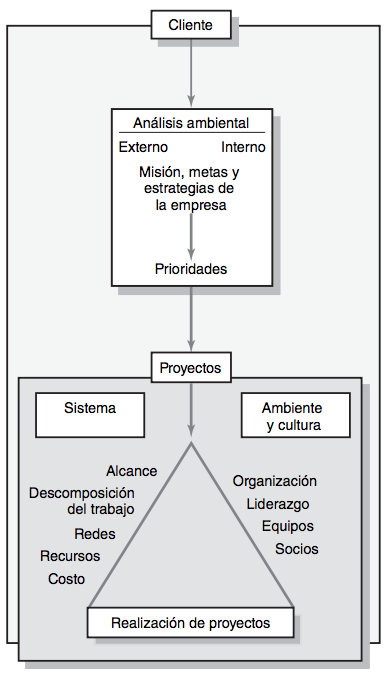
Figura 9. (Gray & Larson, 2009, pág. 13), Administración integrada de proyectos.
A continuación, se presenta un caso de práctica referente a la definición del proyecto, que nos ayudará a
entender de manera más acertada el alcance del proyecto en un caso práctico:
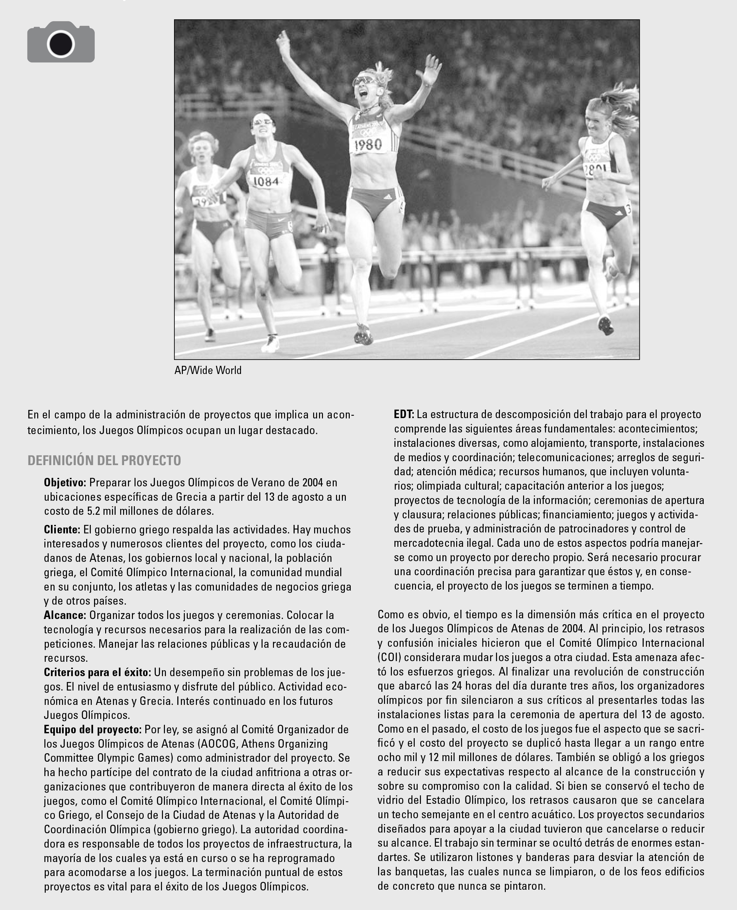
Figura 10. (Gray & Larson, 2009, pág. 92), Caso de práctica.
Se invita al estudiante a revisar detalladamente los conceptos del proceso: “Administración del Alcance
del proyecto”, en el libro “Administración de proyectos: Guía para el aprendizaje” Pearson
Educación, México 2010, Págs. 89 - 111
Aprendiendo Juntos (2020). Gestion del alcance del proyecto PBOK V6. [Archivo de video]
Disponoble en: https://youtu.be/MER8fRRfREc
4.3 Proceso de la gestión de riesgos
Con la finalidad de identificar y minimizar los posibles riesgos en la ejecución y finalización del proyecto
de manera adecuada, es necesario llevar una serie de procesos, que ayudarán a la conclusión de los objetivos
del proyecto; y se gestionarán de manera efectiva los riesgos definiendo estrategias de respuesta y control de
riesgos, por lo que algunos estudiosos del tema definen lo siguiente:
(PMBOK, 2017), define la gestión de riesgos de la siguiente manera:
La Gestión de los Riesgos del Proyecto incluye los procesos para llevar a cabo la planificación de la
gestión, identificación, análisis, planificación de respuesta, implementación de respuesta y monitoreo de los
riesgos de un proyecto. Los objetivos de la gestión de los riesgos del proyecto son aumentar la probabilidad
y/o el impacto de los riesgos positivos y disminuir la probabilidad y/o el impacto de los riesgos negativos, a
fin de optimizar las posibilidades de éxito del proyecto.
Los procesos de Gestión de los Riesgos del Proyecto son:
Planificar la Gestión de los Riesgos: El proceso de definir como realizar las actividades
de gestión de riesgos de un proyecto.
Identificar los Riesgos: El proceso de identificar los riesgos individuales del proyecto,
así como las fuentes de riesgo general del proyecto y documentar sus características.
Realizar el Análisis Cualitativo de Riesgos: El proceso de priorizar los riesgos
individuales del proyecto para análisis o acción posterior, evaluando la probabilidad de ocurrencia e
impacto de dichos riesgos, así como otras características.
Realizar el Análisis Cuantitativo de Riesgos: El proceso de analizar numéricamente el
efecto combinado de los riesgos individuales del proyecto identificados y otras fuentes de incertidumbre
sobre los objetivos generales del proyecto.
Planificar la Respuesta a los Riesgos: El proceso de desarrollar opciones, seleccionar
estrategias y acordar acciones para abordar la exposición al riesgo del proyecto en general, así como para
tratar los riesgos individuales del proyecto.
Implementar la Respuesta a los Riesgos: El proceso de implementar planes acordados de
respuesta a los riesgos.
Monitorear los Riesgos: El proceso de monitorear la implementación de los planes
acordados de respuesta a los riesgos, hacer seguimiento a los riesgos identificados, identificar y analizar
nuevos riesgos y evaluar la efectividad del proceso de gestión de los riesgos a lo largo del proyecto.
La figura 11 muestra una descripción general de los procesos de Gestión de los Riesgos del Proyecto. Los
procesos de Gestión de los Riesgos del Proyecto se presentan como procesos diferenciados con interfaces
definidas, aunque en la práctica se superponen e interactúan entre ellos de formas que no pueden detallarse en
su totalidad. (PMBOK, 2017, pág. 395)
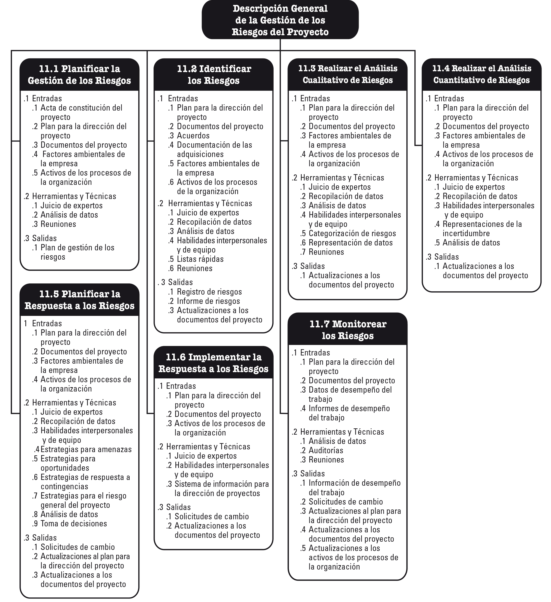
Figura 11. (PMBOK, 2017, pág. 396) Descripción general de la gestión de los riesgos del proyecto.
×
Todos los proyectos son riesgosos, ya que son emprendimientos únicos con diferentes grados de complejidad que
tienen como objetivo ofrecer beneficios. Se dedican a esto dentro de un contexto de restricciones y
suposiciones al tiempo que responden a las expectativas de los interesados, las que pueden ser contradictorias
y cambiantes. Las organizaciones deben elegir enfrentar el riesgo del proyecto de una manera controlada e
intencional para crear valor equilibrando al mismo tiempo el riesgo y la recompensa.
La gestión de los riesgos del proyecto tiene como objetivo identificar y gestionar los riesgos que no estén
contemplados en los demás procesos de la dirección de proyectos. Cuando no se manejan, estos riesgos tienen el
potencial de hacer que el proyecto se desvié del plan y no logre los objetivos definidos para el mismo. En
consecuencia, la efectividad de la Gestión de los Riesgos del Proyecto está directamente relacionada con el
éxito del mismo.
El riesgo existe en dos niveles dentro de cada proyecto. Cada proyecto presenta riesgos individuales que
pueden afectar la consecución de los objetivos del mismo. También es importante tener en cuenta el grado de
riesgo de la totalidad del proyecto, el que surge de la combinación de los riesgos individuales del proyecto y
otras fuentes de incertidumbre. Los procesos de Gestión de los Riesgos del Proyecto abordan ambos niveles de
riesgo en los proyectos, y estos se definen de la siguiente manera:
Riesgo individual del proyecto es un evento o condición incierta que, si se produce, tiene un efecto
positivo o negativo en uno o más de los objetivos del proyecto.
Riesgo general del proyecto es el efecto de la incertidumbre sobre el proyecto en su conjunto, proveniente
de todas las fuentes de incertidumbre incluidos riesgos individuales, que representa la exposición de los
interesados a las implicancias de las variaciones en el resultado del proyecto, tanto positivas como
negativas.
Los riesgos individuales del proyecto pueden tener un efecto positivo o negativo sobre los objetivos del
proyecto, si se presentan. La Gestión de los Riesgos del Proyecto tiene como objetivo explotar o mejorar los
riesgos positivos (oportunidades), evitando o mitigando al mismo tiempo los riesgos negativos (amenazas). Las
amenazas no gestionadas pueden dar lugar a cuestiones o problemas tales como retrasos, sobrecostos, déficit en
el desempeño o perdida de reputación. Las oportunidades aprovechadas pueden conducir a beneficios tales como
la reducción de tiempo y costo, mejora en el desempeño o buena reputación.
El Riesgo General del Proyecto también puede ser positivo o negativo. La gestión del riesgo general del
proyecto tiene como objetivo mantener la exposición al riesgo del proyecto dentro de un rango aceptable,
mediante la reducción de los impulsores de variación negativa, la promoción de los impulsores de variación
positiva y la maximización de la probabilidad de lograr los objetivos generales del proyecto.
Los riesgos seguirán surgiendo durante la vida del proyecto, por lo que los procesos de Gestión de los
Riesgos del Proyecto deben llevarse a cabo de manera iterativa. El riesgo es abordado inicialmente durante la
planificación del proyecto mediante la configuración de la estrategia del proyecto. El riesgo también debe ser
controlado y gestionado a medida que avanza el proyecto a fin de asegurar que el proyecto vaya por buen camino
y se atiendan los riesgos emergentes.
Con el fin de gestionar el riesgo de manera efectiva en un proyecto en particular, el equipo del proyecto
debe saber qué nivel de exposición al riesgo es aceptable para lograr los objetivos del proyecto. Esto es
definido mediante umbrales de riesgo mensurables que reflejan el apetito al riesgo de la organización y de los
interesados en el proyecto. Los umbrales de riesgo expresan el grado de variación aceptable en torno a un
objetivo del proyecto. Son establecidos explícitamente, comunicados al equipo del proyecto y reflejados en las
definiciones de los niveles de impacto de riesgo para el proyecto.
4.3.1 Tendencias y prácticas emergentes en la gestión de los riesgos del proyecto
El enfoque de la gestión de los riesgos del proyecto se está ampliando a fin de asegurar que se consideren
todos los tipos de riesgo, y que los riesgos del proyecto sean entendidos en un contexto más amplio. Las
tendencias y practicas emergentes para la Gestión de los Riesgos del Proyecto incluyen, entre otras:
Riesgos no relacionados con eventos.
Riesgo de variabilidad
Riesgo de ambigüedad
Capacidad de recuperación del proyecto
El nivel correcto de contingencia del presupuesto y del cronograma para riesgos emergentes, además de
un presupuesto de riesgo específico para los riesgos conocidos;
Procesos de proyecto flexibles que puedan hacer frente a los riesgos emergentes, manteniendo la
orientación general hacia las metas del proyecto, incluyendo una robusta gestión del cambio;
Un equipo de proyecto empoderado que tenga objetivos claros y que sea de confianza para ejecutar el
trabajo dentro de los límites acordados,
Revisión frecuente de los signos de alerta temprana a fin de identificar los riesgos emergentes lo más
pronto posible; y
Aportes claros por parte de los interesados a fin de aclarar las zonas donde el alcance o la
estrategia del proyecto puedan ser ajustados en respuesta a los riesgos emergentes.
Gestión integrada de los riesgos
4.3.2 Consideraciones sobre adaptación
Debido a que cada proyecto es único, es necesario adaptar la forma en que se apliquen los procesos de Gestión
de los Riesgos del Proyecto. Las consideraciones sobre adaptación incluyen, entre otras:
Tamaño del proyecto
Complejidad del proyecto
Importancia del proyecto
Enfoque de desarrollo. (PMBOK, 2017, págs. 398 - 400)
Se invita al estudiante a revisar detalladamente los conceptos del proceso: “Gestión de los riesgos del
proyecto”, en el libro “A Guide to the Project Management Body of Knowledge” Pmbok Guide 6ª. Edición Págs. 395
- 458.
Se invita al estudiante a revisar detalladamente los conceptos del proceso: “Administración de riesgos”, en
el libro “Administración de proyectos: Guía para el aprendizaje” Pearson Educación, México 2010, Págs. 223 -
235.
Tecnología Binaria; (2017). GESTIÓN De RIESGOS De Un PROYECTO Según La GUÍA PMBOK(LINK de
DESCARGA). [Archivo de video] Disponoble en: https://youtu.be/3e43NkISH-k
BSG Institute (2020). ¿Qué es la Gestión de Riesgos? [Archivo de video] Disponoble en:
https://youtu.be/X8AA5DEUGQY
Nota: Se recomienda que para mejor comprensión y entendimiento de los temas de la unidad 4, acuda a
los capítulos dedicados y desarrollados a cada uno de los temas señalados en las bibliografías marcadas,
para que tenga un panorama más amplio.
Y para solventar dudas puntuales acudir con el docente asignado.
Cierre de unidad
En esta unidad se conoce la importancia que tiene la entrega del proyecto de manera puntual, considerando los
procesos para su cierre de manera normal o por alguna otra situación, así mismo se validan los productos
entregables de acuerdo al alcance del proyecto previamente definido. De igual manera el estudiante deberá
analizar las herramientas y/o estrategias orientadas a la prevención de eventos negativos y/o positivos
durante el desarrollo y entrega del proyecto.
En esta asignatura se busca que el estudiante aplique sus conocimientos adquiridos a lo largo de este curso,
y aplicarlos a proyectos que se generarán de manera cotidiana es su vida laboral y así mismo evaluar los
elementos que se involucran en la administración de proyectos, para que de esta manera ayude a la organización
a contar con información precisa y veraz, que realmente ayude a la toma de decisiones en la asignación de
recursos.
Fuentes de
consulta
Aprendiendo_Juntos. (19 de 01 de 2020). Aprendiendo Juntos. Obtenido de
https://www.youtube.com/watch?v=MER8fRRfREc
BSGInstitute. (17 de 06 de 2020). BSGInstitute. Obtenido de
https://www.youtube.com/watch?v=X8AA5DEUGQY
CertCampus. (16 de 01 de 2018). Cert Campus. Obtenido de https://www.youtube.com/watch?v=REJMWYSqtN4
Gray, C., & Larson, E. (2009). Administración de proyectos. México: Mc Graw-Hill.
PMBOK, G. d. (2017). A guide to the Project Management Body of Knowledge PMBOK GUIDE. Pennsylvania:
Project Management Institute, Inc.
Rivera Martínez, F., & Hernández Chávez, G. (2010). Administración de proyectos: Guía para el
aprendizaje. México: Pearson Educación.
TecnologíaBinaria. (15 de 08 de 2017). Tecnología Binaria. Obtenido de
https://www.youtube.com/watch?v=3e43NkISH-k
YarethPerez. (12 de 05 de 2020). Yareth Perez. Obtenido de https://www.youtube.com/watch?v=fel0RbEJzT4
 Presentación de unidad
Presentación de unidad Objetivo de
unidad
Objetivo de
unidad Da clic en cada uno de los títulos
para obtener más información.
Da clic en cada uno de los títulos
para obtener más información. Fuentes de
consulta
Fuentes de
consulta